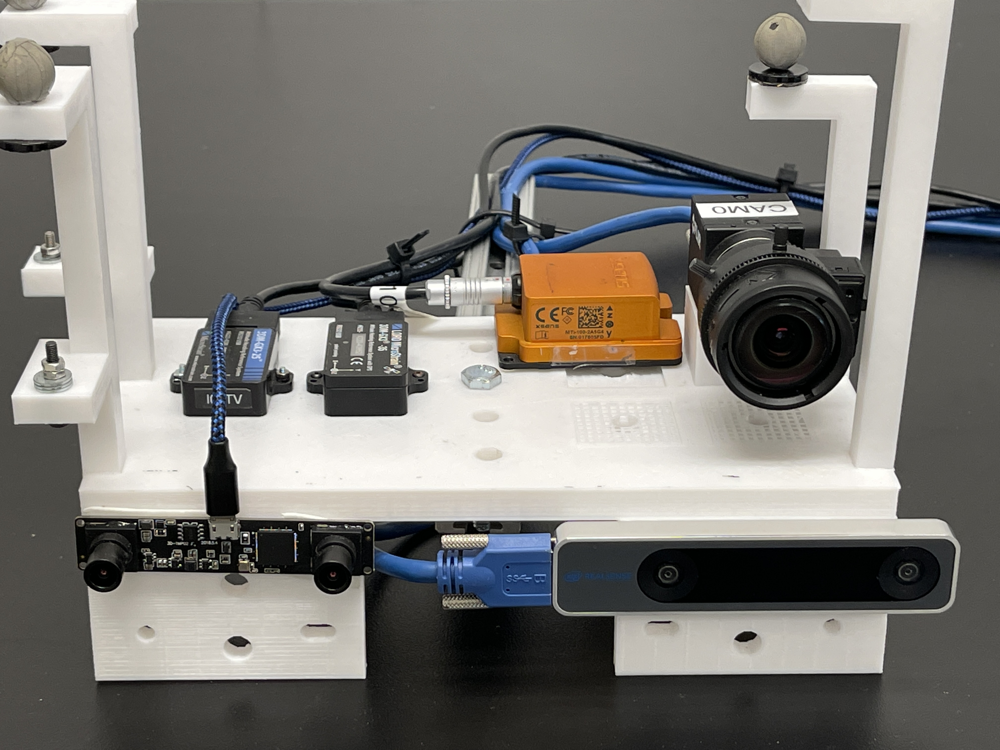

Multi-Visual-Inertial Sensor Calibration
Open MVIS is designed for multi-visual-inertial sensor calibration.
|
 |
Visula-Inertial (VI)-Rig (4 IMUs and 5 Cameras):
|
Main Features
This is designed to support the spatial-temporal and intrinsic calibration for multiple IMUs, Gyros, cameras.
The main features of this repository are as following:
IMU intrinsic calibration (with kalibr and RPNG model)
Gyroscope intrinsic calibration (with Kalibr and RPNG model)
Camera intrinsic calibration refinement (with rad-tan/equi-dist model)
IMU-IMU spatial-temporal calibration (rotation, translation and timeoffset)
IMU-Gyro spatial-temporal calibration (rotation and timeoffset)
IMU-Cam spatial-temporal calibration (rotation, translation and timeoffset)
Rolling shutter readout time calibration (with first/middle/last row as image timestamp)
Evaluation scripts for calibration results
Open-sourced MVIS datasets
Support both Kalibr April Board and AuRco tags
|